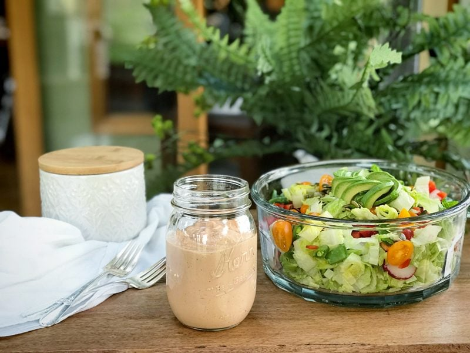

Russian Salad Dressing
– raw, vegan, gluten-free –
I am a digestion-geek. For years, I bet a day hasn’t slipped by that I haven’t done some sort of reading and researching about the digestive system. And what I have learned, is that without a healthy digestive system, we can’t have a healthy body. To strive for optimal health, we must start with our core… our stomach, gut, tummy, second brain, solar plexus, potbelly, whatever you wish to call it.

Fats help Absorption
Did you know that fats (healthy ones) help the body absorb nutrients? Vegetables are essentially fat-free and are a rich source of healthy carotenoids. In order for these carotenoids to be absorbed by the digestive system, fat is needed.
Today’s healthy fat comes in the form of cashews. So not only will help us to absorb the nutrients that we need from our veggies, it also will give the dressing a wonderful, creamy mouthfeel. They are rich in “heart-friendly” monounsaturated fatty acids which help lower harmful LDL-cholesterol while increasing good HDL cholesterol.
As with all good things in life, one must practice moderation. One trick that I learned years ago was to pour my dressing into a small bowl that sits beside my salad bowl. When I went to take a bit of salad, I would dip the prongs of my fork into the dressing first, then load my fork with veggies. This gave every bite a taste of dressing without over “dressing” my salad. Just an idea. I hope you enjoy this recipe.
Yields 2 3/4 cups
- 1 cup (170 g) cashews, soaked 2 + hours
- 1 cup (245 g) water
- 1/2 cup (100 g) orange juice
- 1/4 cup (46 g) apple cider vinegar
- 3 Tbsp (50 g) tomato paste
- 2 tsp (10 g) liquid sweetener
- 2 tsp (12 g) Bragg Liquid Aminos or Tamari
- 1 Tbsp (11 g) onion powder
- 1/4 tsp (1 g) black pepper
Preparation:
- After soaking the cashews, drain and discard the soak water.
- The soaking process will soften the nuts so they blend creamy. It also helps to reduce the phytic acid that lurks within them.
- If you wish to use sunflower seeds, use 1 cup (137 g)
- Place cashews, 1 cup of water, orange juice, vinegar, tomato paste, agave, Tamari, onion powder and black pepper in a high-powered blender and blend until smooth.
- I have made this replacing the agave with liquid stevia. I added 10 drops but this is subject to each person’s taste.
- Store in an airtight container for 3-5 days.
© AmieSue.com